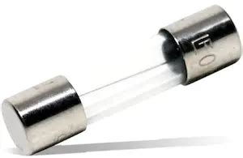
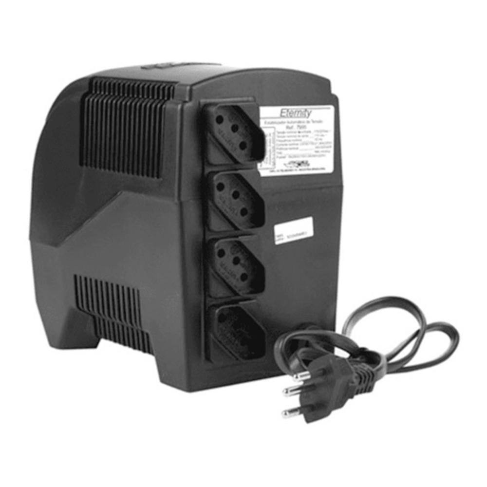
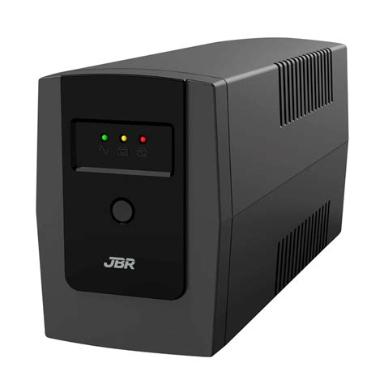

Dispositivos para proteção elétrica:
Bem aqui preciso mostrar isso urgente, afinal na maioria das vezes o problema não é só
a sujeira ou o jeito que você monta o computador, mas, sim a eletricidade.
Filtro de Linha:

O filtro de linha serve para proteger qualquer dispositivo conectado a ele contra picos de energia
e bem ele faz isso porque ele usa um fusível que é um componente de segurança e bem como isso funciona?
Vamos usar um exemplo: Você estava jogando CSGO 1.6 em um dia chuvoso, mas ai dá picos de energia na casa
onde você mora e bem... Você usou filtro de linha que tinha um fusível, esse fusível explode e ele para a
corrente elétrica, isso é bom!
Imagem de como se parece um fusível:

Recomendável?: Sim, para computadores comuns e periféricos.
Estabilizador:

O estabilizador meio que tenta manter a tensão estável e sim ele era muito usado antigamente.
Recomendável?: Hoje em dia não é necessário para computadores modernos, mas pode ser útil em alguns lugares
com rede elétrica muito instável, mas não protege contra picos muito fortes ou falta de energia.
Nobreaks:

O nobreaks é bem mais completo, tipo ele te protege contra picos de energia, mantém a energia estável, possui bateria
interna e ainda se a luz acabar o computador continuará ligado por alguns minutos, sendo perfeito para se caso você quer
entregar um trabalho atrasado mas acabou sua luz em casa.
Recomendável?: Muito recomendável (Apesar de ser caro).